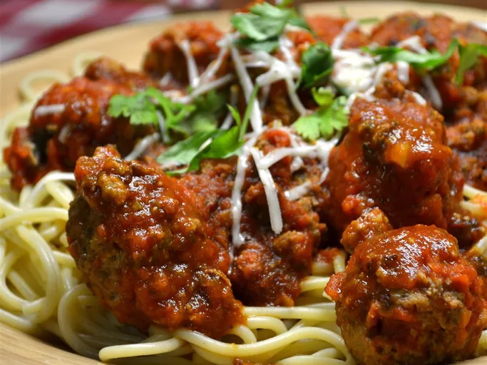

Meatball

Description
These ricotta-spiked meatballs are so tender, so flavorful, and so delicious.
There are hardly any ingredients.
Throw them over some spaghetti for a hearty meal.
Ingredients
- ½ onion, minced
- 4 tablespoons olive oil, divided
- 3 cloves garlic, minced3 cloves garlic, minced
- 1 pound ground beef
- 1 cup whole milk ricotta cheese
- ¼ cup packed chopped Italian parsley
- 1 large egg, beaten
- 1 ½ teaspoons kosher salt
- ½ teaspoon freshly ground black pepper
- 1 pinch cayenne pepper, or to taste
- ⅓ cup dry bread crumbs
- 1 (28 ounce) jar marinara sauce
- 1 cup water
Steps
-
Sauté onion in 2 tablespoons olive oil in a skillet over medium heat until onion is translucent, about 5 minutes.
Stir garlic into onion and turn off heat.
Transfer onion mixture to a large mixing bowl.
-
Stir ground beef, ricotta cheese, parsley, egg, salt, black pepper, and cayenne pepper with onion mixture until almost combined;
stir in bread crumbs and continue to mix until thoroughly blended.
-
Roll about 2 tablespoons of mixture into a 1-inch ball for each meatball.
Pour remaining 2 tablespoons olive oil in same skillet used to cook onions.
Place skillet over medium heat and brown meatballs on all sides in hot oil, about 5 minutes. Hold a crumpled paper towel in tongs and use it to remove excess grease from skillet.
-
Pour marinara sauce and water over meatballs in skillet.
Stir to combine and bring to a simmer.
Reduce heat to medium-low and simmer, stirring occasionally, until meatballs are cooked through and no longer pink in the center, about 30 minutes.
Go Back To Home Page